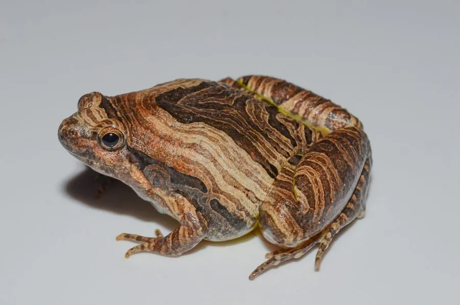

两栖动物 · 动物界
花姬蛙 Microhyla pulchra

中国南方与东南亚的小型蛙类，背部呈黄褐色并带深色宽斑，花纹美丽，雨后常在水边草丛鸣叫捕虫。
- 分类
- 门脊索动物门纲两栖纲目无尾目科姬蛙科属姬蛙属
- 栖息环境
- 草地、稻田、灌丛、林缘与村落附近的潮湿环境
- 地理分布
- 中国南方多省区及东南亚部分地区
- 保护级别
- IUCN 无危（LC）；中国未列入国家重点保护名录
物种志
花姬蛙体长 2.5–3.5 厘米，身体短宽，头部小，吻端钝圆，眼睛较小，背部呈黄褐或红褐色，布有深褐色的宽大斑块和不规则花纹，腹面白色，四肢有深浅相间的横纹；趾间有蹼，后肢肌肉发达，善于跳跃。
它分布于中国南方以及东南亚地区，栖息于草地、稻田、灌丛、林缘和村落附近的潮湿环境，多在雨后和夜间活动，捕食蚂蚁、白蚁、小甲虫和螨虫。每年 4–8 月繁殖，雌蛙在浅水或稻田中产卵数百粒，卵漂浮在水面，约 1–2 天孵化，蝌蚪约 1 个月后变态。它的花纹比同属其他姬蛙更鲜艳，常被误认为小型雨蛙；目前种群数量较稳定，未被列入国家重点保护名录，但农药使用和湿地减少仍会影响它。
形态与习性
- 食性蚂蚁、白蚁、小甲虫和螨虫
- 体长2.5–3.5 cm
- 寿命约 3–5 年
- 繁殖卵生，每次数百粒，约 1–2 天孵化
- 活动节律夜行性，雨后活动频繁
- 特征背部黄褐色并带深色宽斑，四肢有横纹
趣味知识
- 花姬蛙背部的深色宽斑和四肢横纹，让它看起来比同属姬蛙更花哨。
- 它多在雨后集中鸣叫，蛙声与雨声常混在一起难以分辨。
- 花姬蛙虽然体型小，却是农田里捕食蚁类的小能手。